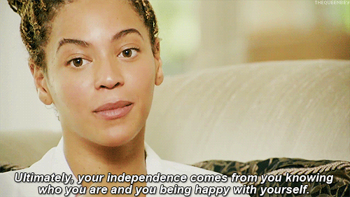

Ever since I was little I knew that life was never going to be easy. Growing up I was never the kid who was a part of the crowd or even fit into his environment. From a very young age I began to learn that everyone is different in life and differences are something that we should hold near and dear in our hearts. If we start to expect to see ourselves in others, we should start to ask ourselves, "Is this healthy for me and my surroundings?" I graduated elementary school from Cesar E. Chavez MCC, High School from Benito Juarez Community Academy, and Culinary School from NECI (The New England Culinary Institute). I am a proud product of CCAP (The Careers Through Culinary Arts Program), and NECI. I am what I am today because of the teachings and training that I received while learning in these two institutions.
